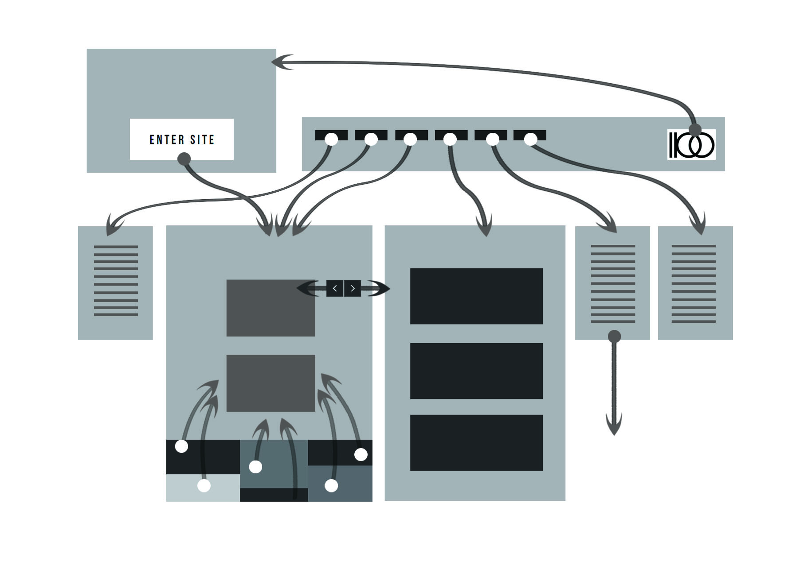
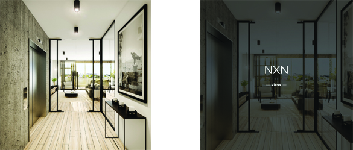
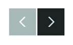

The link to the project page on the initial page is trasparent at the beginning. But when it is hoverred, the background changes to white and the text changes to dark grey. This is a very strong indication for users.

When project review image is hovered, the picture enlarges and gets covered by a grey shade. The project name appears and a "view" text indicates it is a link to the project detail.

When project detail unfolds, two button appears on the right side of the page when there is enough space. The botton change its background to light grey to indicate it is a link.